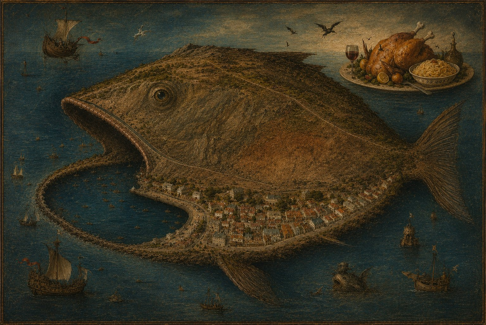

(The lawn before Longwood House on St Helena. Napoleon is resting on a sun lounger. The First Student is sitting on a stool next to him, holding a yellow rose in one of his hands. The Gravedigger is shovelling.)
Napoleon
Who is he?
The First Student
He’s my grandfather.
Napoleon
I can see where you get your good looks from.
The First Student
I’m not so sure.
Napoleon
I am.
(A beat.)Napoleon
What is he doing?
The First Student
He is digging your grave.
Napoleon
Is my cough so bad? Is it finally time —
The First Student
To die?
Napoleon
To die …
The First Student
It looks like it.
Napoleon
I’m glad you are by my side then.
The First Student
I don’t want you to die.
Napoleon
Others will be delighted.
The First Student
Don’t say that.
Napoleon
The garden is still adorable.
(A beat.)Napoleon
Apart from that growing hole.
The First Student
Look what I brought you.
(The First Student hands the rose to Napoleon.)
Napoleon
A primrose.
(A beat.)Napoleon
Thank you.
The First Student
Not for that.
Napoleon
Is Betsy around?
The First Student
She is.
(A pause. Betsy steps out of the house carrying a plate with pasta and chicken.)
Betsy
I had promised you.
Napoleon
To see you twice after such a long time of separation.
Betsy
I know. It’s extraordinary.
Napoleon
It is. As is your chicken.
Betsy
Enjoy it.
(Napoleon takes a drumstick and bites into it.)
Napoleon
So juicy.
(He takes another bite.)
Napoleon
So spicy.
The Gravedigger
Almost ready!
Napoleon
Let me have some of the pasta first.
(Lights out.)
(A pause.)
(A spotlight fades in, focusing on the First Student. He is asleep on Napoleon’s sun lounger. All others are gone. When the light becomes glaring, he wakes with a start.)